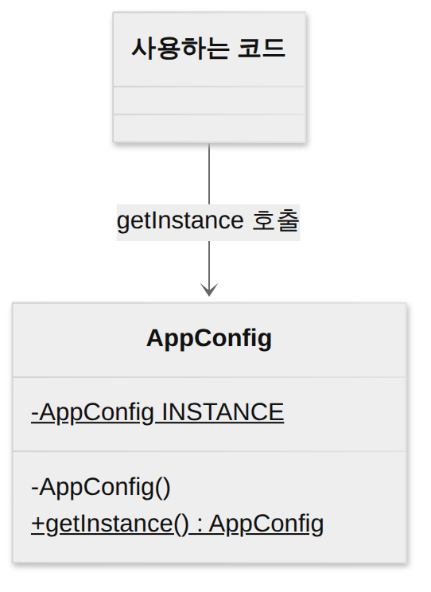
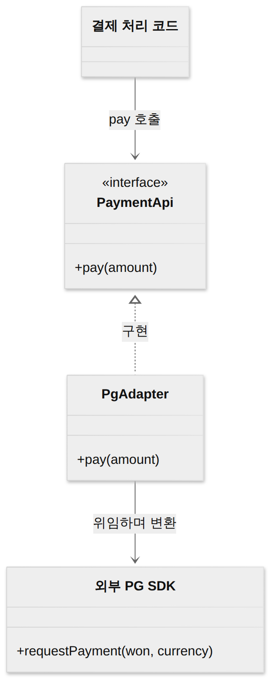
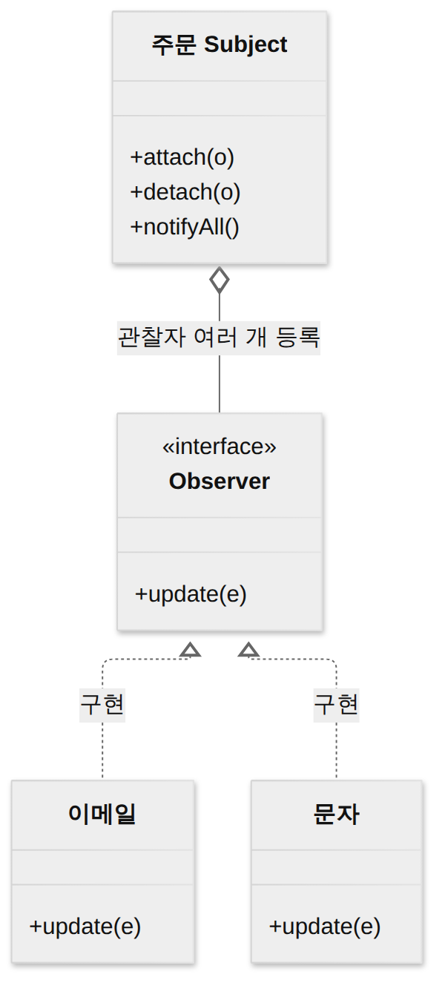
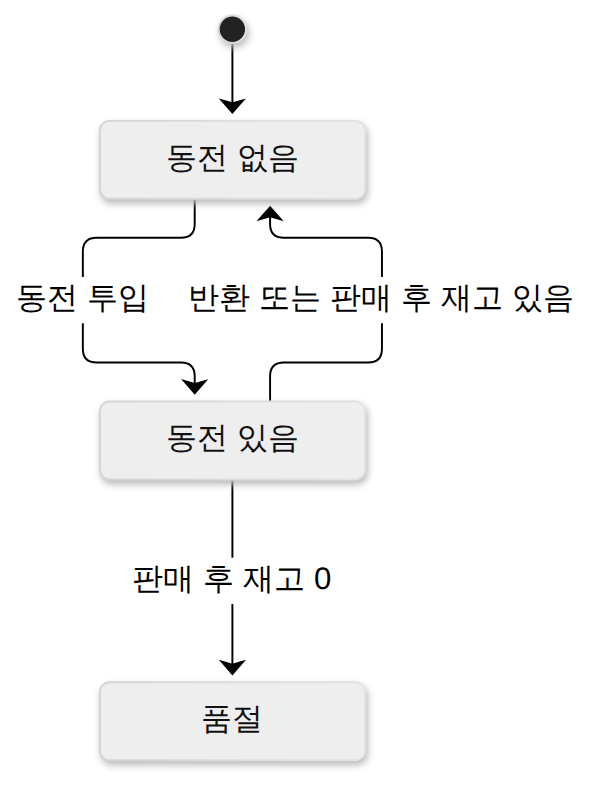

D014 · 디자인패턴 — GoF 23 · 생성 5 · 구조 7 · 행위 11
A3 어제 SOLID로 “좋은 객체 설계는 어떤 원칙을 지켜야 하나”를 봤어요. 오늘은 그 원칙을 실제 코드에서 지키려고 사람들이 오랫동안 반복해서 써 온 모범 구조 23개, GoF 디자인패턴이에요. 싱글턴·옵저버·프록시 같은 이름은 현업에서 많이 들어 봤을 거예요. 시험은 딱 두 가지를 물어요. ① 이 패턴이 생성·구조·행위 중 어디에 속하는지, ② 설명 문장이나 상황을 보고 어떤 패턴인지. 그래서 오늘은 23개를 모두 “왜 필요한가 → 무엇을 하나 → 비슷한 패턴과 어디가 다른가” 순서로 짚고, 마지막에 분류·결정 단어로 정리해요.
- 디자인패턴이 무엇이고 왜 생겼는지 설명하고, 아키텍처 패턴(시스템 전체)과 디자인패턴(클래스·객체 수준)의 규모 차이를 구별할 수 있다
- GoF 23개를 목적에 따라 생성 5 · 구조 7 · 행위 11로 분류할 수 있다(범위 기준 클래스/객체도 있다는 것을 안다)
- 생성 패턴 5개(싱글턴·팩토리 메서드·추상 팩토리·빌더·프로토타입)의 의도를 한 줄로 구별할 수 있다
- 구조 패턴 7개(어댑터·브리지·컴포지트·데코레이터·퍼사드·프록시·플라이웨이트)를 구별할 수 있다. 특히 어댑터 vs 브리지, 데코레이터 vs 프록시, 퍼사드 vs 어댑터
- 행위 패턴 11개를 구별하고 상황을 보고 고를 수 있다(전략 vs 상태, 옵저버 vs 중재자, 템플릿 메서드 vs 전략). 어제의 OCP·DIP가 어떤 패턴에서 쓰이는지 연결할 수 있다
1. A3 지도 — 오늘 위치
2. 디자인패턴은 왜 생겼나
어제 객체지향으로 설계하면 재사용·확장이 쉬워진다고 했죠. 그런데 실제로 객체로 나눠 보면 프로젝트마다 똑같은 고민이 반복돼요. “new 구체클래스()가 코드 곳곳에 박혀서 구현을 바꾸려면 전부 찾아 고쳐야 한다”, “가져다 쓰려는 외부 라이브러리의 메서드 모양이 우리 인터페이스와 안 맞는다”, “주문 상태가 바뀌면 메일·문자·포인트 서비스에 모두 알려야 하는데 주문 클래스가 그 셋을 다 알게 된다” 같은 문제예요. 경험 많은 개발자들은 이런 문제를 이미 비슷한 방식으로 풀고 있었어요.
디자인패턴(Design Pattern)은 이렇게 소프트웨어 설계에서 자주 반복되는 문제에 대한 검증된 해결 방법을 정형화해서 재사용할 수 있게 정리한 것이에요. 1994년 에릭 감마(Erich Gamma)·리처드 헬름(Richard Helm)·랄프 존슨(Ralph Johnson)·존 블리시디스(John Vlissides) 네 사람이 『Design Patterns』 책에서 23개를 정리했고(책의 저작권 표기는 1995년이라 1995로 적은 자료도 있어요), 이 네 사람을 GoF(Gang of Four)라고 불러요. 그래서 이 23개를 “GoF 디자인패턴”이라고 해요.
패턴의 핵심은 코드 조각이 아니라 설계 아이디어라는 점이에요. 각 패턴은 “이런 상황(문제)에서 → 이런 구조(클래스·객체의 역할 배치)로 풀면 → 이런 결과(장단점)가 생긴다”를 담고 있고, 실제 코드는 상황에 맞게 다시 짜요. 얻는 것은 세 가지예요. 이미 검증된 구조라 재사용성과 유지보수성이 좋고, 어제 배운 결합도↓·응집도↑를 구체적인 모양으로 실현해 주고, 무엇보다 “여기 옵저버로 가요”처럼 팀이 긴 설명 없이 통하는 공용 어휘가 생겨요. 대가는 패턴을 억지로 끼워 넣으면 클래스 수만 늘고 구조가 복잡해진다는 점이에요. 문제가 없는데 패턴부터 쓰는 건 오히려 나쁜 설계예요. 패턴 책을 막 읽고 나면 인사말 하나 찍는 데도 GreetingFactoryBuilder를 만들고 싶어지는 시기가 오는데, 대부분 한 번은 거쳐 가는 성장통이에요.
GoF 책 1장은 패턴 전체에 깔린 두 원칙을 말해요. 첫째, “구현이 아니라 인터페이스에 맞춰 프로그래밍하라”. 어제 배운 DIP(구체 클래스가 아니라 추상에 의존)와 같은 생각이에요. 둘째, “클래스 상속보다 객체 합성을 선호하라”. 상속은 컴파일할 때 부모-자식 관계가 굳어 버리지만, 합성(객체를 필드로 들고 일을 맡기는 것, 위임)은 실행 중에 다른 객체로 갈아 끼울 수 있어서 유연해요. 오늘 볼 데코레이터·전략·상태가 이 두 번째 원칙의 대표 선수예요.
아키텍처 패턴과 무엇이 다른가 — 규모
D011에서 레이어·MVC·파이프-필터·브로커 같은 아키텍처 패턴을 봤어요. 둘 다 “반복되는 문제의 검증된 해법”이라는 점은 같지만 다루는 크기가 달라요. 아키텍처 패턴은 시스템 전체를 어떤 큰 덩어리(서브시스템·계층)로 나누고 그 덩어리들이 어떻게 소통할지를 정해요. 디자인패턴은 그렇게 나눈 덩어리 하나 안에서 몇 개의 클래스·객체가 어떻게 역할을 나누고 협력할지를 정해요. 아래 그림처럼 시스템 지도를 크게 그리는 게 아키텍처 패턴, 그 지도의 한 칸을 확대해 안을 설계하는 게 디자인패턴이에요.
3. 23개 지도 — 생성 · 구조 · 행위
왜 생겼는지 봤으니 이제 23개를 담을 서랍이 필요해요. GoF는 패턴을 목적에 따라 세 갈래로 나눠요. 갈래 이름이 곧 “이 패턴이 푸는 문제의 종류”예요.
생성(Creational) 패턴은 “객체를 어떻게 만들까”를 다뤄요. 객체를 만드는 코드와 객체를 쓰는 코드를 떼어 내서, 쓰는 쪽이 구체 클래스 이름을 몰라도 되게 하는 게 공통 목표예요. 구조(Structural) 패턴은 “이미 있는 클래스·객체를 어떻게 조립해서 더 큰 구조를 만들까”를 다뤄요. 감싸기, 연결하기, 트리로 묶기, 공유하기가 여기 속해요. 행위(Behavioral) 패턴은 “객체들이 책임을 어떻게 나누고 어떻게 소통할까”를 다뤄요. 알림, 알고리즘 교체, 요청 넘기기, 상태 저장 같은 협력 방식이 여기 속해요. 자료에 따라 ‘행동 패턴’이라고도 써요.
분류 기준이 하나 더 있어요. 범위(Scope) 기준으로, 패턴이 클래스 사이 관계(상속, 컴파일 시점에 고정)를 주로 쓰면 클래스 패턴, 객체 사이 관계(합성·위임, 실행 중에 바뀜)를 주로 쓰면 객체 패턴이에요. 대부분은 객체 패턴이고, GoF 원서 분류표에서 클래스 패턴은 팩토리 메서드·어댑터(클래스형)·인터프리터·템플릿 메서드 정도예요. 다만 이번에 확인한 국내 자료들은 범위 목록을 이렇게 다 적지는 않아서, 시험 대비는 목적 분류에 집중하고 범위는 “이런 기준도 있다” 정도로 알아 두세요.
4. 생성 패턴 5개 — 객체를 어떻게 만들까
지도의 첫 서랍부터 열어요. 생성 패턴이 필요한 이유는 어제 DIP에서 본 문제 그대로예요. 결제 처리 코드 안에 new KakaoPay()가 박혀 있으면, 그 코드는 인터페이스가 아니라 구체 클래스에 의존해요. 결제 수단을 바꾸거나 테스트용 가짜 객체로 바꾸려면 new가 있는 곳을 모두 고쳐야 하죠. 생성 패턴은 “누가, 언제, 어떤 클래스의 객체를 만들지”라는 책임을 한곳에 모으거나 다른 클래스에 맡겨서, 쓰는 쪽이 생성 과정을 몰라도 되게 해요.
싱글턴(Singleton) — 인스턴스는 딱 하나
설정 정보, 로거, 커넥션 풀처럼 프로그램 전체에서 하나만 있어야 하는 객체가 있어요. 여기저기서 new로 만들면 설정이 두 벌이 되거나 자원이 낭비돼요. 싱글턴은 클래스의 인스턴스가 오직 하나만 생성되도록 보장하고, 그 인스턴스에 어디서든 접근할 수 있는 전역 접근점을 제공하는 패턴이에요. 만드는 방법은 세 가지 장치예요. 생성자를 private으로 막아 바깥에서 new를 못 하게 하고, 클래스 안에 자기 자신 타입의 static 필드로 유일한 인스턴스를 들고 있고, static 메서드 getInstance()로 그 인스턴스를 꺼내 줘요.
public class AppConfig {
private static final
AppConfig INSTANCE
= new AppConfig();
// 바깥에서 new 금지
private AppConfig() { }
public static AppConfig
getInstance() {
return INSTANCE; // 항상 같은 객체
}
}
// 두 번 불러도 같은 객체(== true)
UML에서 밑줄 친 멤버는 static(클래스 소속)이고, -는 private이에요. 장점은 메모리 낭비가 없고 공유 자원을 한곳에서 관리한다는 것, 대가는 사실상 전역 변수라서 여러 곳이 이 객체에 몰래 의존하게 되고(결합도↑), 테스트에서 가짜로 바꾸기 어렵고, 멀티스레드에서 처음 생성할 때 두 개가 만들어지지 않게 신경 써야 한다는 거예요. “어디서든 꺼내 쓸 수 있다”는 장점이 “누가 언제 값을 바꿨는지 아무도 모른다”는 단점과 사실상 같은 말이라는 게 싱글턴의 씁쓸한 점이에요. 스프링 빈이 기본으로 싱글턴 스코프인 게 대표 예인데, 스프링은 컨테이너가 하나만 만들어 주입해 주기 때문에 위 코드처럼 직접 getInstance()를 부를 일은 없어요. 시험에서는 “하나만”, “유일”, “전역 접근”이 보이면 싱글턴이에요.
팩토리 메서드(Factory Method) vs 추상 팩토리(Abstract Factory)
이 둘은 이름이 비슷해서 시험의 단골 짝이에요. 팩토리 메서드는 객체를 생성하는 인터페이스(메서드)는 상위 클래스가 정의하고, 어떤 클래스의 객체를 만들지는 하위 클래스가 결정하게 하는 패턴이에요. 예를 들어 상위 Logistics 클래스에 “운송 수단을 만든다”는 추상 메서드 createTransport()가 있고, 배송 흐름(만들고 → 싣고 → 보낸다)은 상위가 갖고 있어요. 하위 RoadLogistics는 트럭을, SeaLogistics는 배를 만들도록 그 메서드를 오버라이딩해요. 생성 결정을 상속으로 하위에 미루기 때문에 “가상 생성자(Virtual Constructor)”라고도 불러요. 새 운송 수단이 생기면 하위 클래스 하나만 추가하면 되니 OCP를 지켜요.
추상 팩토리는 서로 관련 있는 객체들의 묶음(제품군)을, 구체 클래스를 지정하지 않고 한꺼번에 생성하는 인터페이스를 제공하는 패턴이에요. UI를 윈도 스타일과 맥 스타일로 바꿔야 한다면, 버튼·체크박스·메뉴가 같은 스타일끼리 세트로 나와야 해요. 그래서 GuiFactory 인터페이스에 createButton()·createCheckbox()를 두고, WinFactory는 윈도 세트를, MacFactory는 맥 세트를 만들어요. 클라이언트는 팩토리 하나만 갈아 끼우면 제품 전체가 일관되게 바뀌어요. 이렇게 부품 한 벌을 통째로 바꾸기 때문에 “키트(Kit)”라고도 해요. 대가는 제품 종류(예: 슬라이더)를 새로 추가하면 모든 팩토리를 고쳐야 한다는 점이에요.
빌더(Builder)와 프로토타입(Prototype)
필드가 열 개가 넘는 객체를 생성자 하나로 만들면 new User("kim", null, null, 30, true, …)처럼 순서를 외워야 하고 실수가 잦아요. 두 번째 null이 주소였는지 전화번호였는지는, 코드를 쓴 본인도 일주일 뒤엔 몰라요. 빌더는 복잡한 객체의 생성 과정과 표현 방법을 분리해서, 같은 생성 절차로 서로 다른 표현의 객체를 만들 수 있게 하는 패턴이에요. 객체를 한 번에 만들지 않고 단계별로 부품을 조립한 뒤 마지막에 완성품을 받아요. Lombok @Builder로 만든 User.builder() → .name("kim") → .age(30) → .build() 연쇄, StringBuilder, HTTP 요청 빌더가 현업 예예요. 단서는 “단계별 조립”, “생성 과정과 표현 분리”예요.
프로토타입은 원형(prototype)이 되는 객체를 복제(clone)해서 새 객체를 생성하는 패턴이에요. DB를 조회하거나 복잡한 계산을 거쳐야 만들 수 있는 객체처럼 처음부터 만드는 비용이 큰 경우, 이미 만든 객체를 복사한 뒤 필요한 값만 바꾸는 게 빨라요. 게임에서 몬스터 원본 하나를 만들어 두고 복제해서 수백 마리를 찍어 내는 식이에요. Java의 Cloneable·clone()이 이 패턴을 위한 장치예요. 주의할 점은 안에 다른 객체를 들고 있으면 얕은 복사로 참조가 공유될 수 있다는 거예요. 단서는 “복제”, “원본 객체를 복사”예요.
한 장 요약 — 생성 패턴 다섯 개를 시험 단서 단어와 함께 묶으면 이래요.
| 패턴 | 의도 · 시험 단서 |
|---|---|
| 싱글턴 | 인스턴스를 하나만 만들고 전역 접근점 제공 |
| 팩토리 메서드 | 생성할 클래스를 하위 클래스가 결정(가상 생성자) |
| 추상 팩토리 | 관련 객체 묶음(제품군)을 구체 클래스 없이 생성(키트) |
| 빌더 | 복잡한 객체를 단계별 조립, 생성 과정과 표현 분리 |
| 프로토타입 | 원형 객체를 복제해서 생성(생성 비용이 클 때) |
5. 구조 패턴 7개 — 어떻게 조립하고 감쌀까
객체를 잘 만들었으면, 다음 문제는 만든 객체들을 엮는 일이에요. 이미 있는 클래스를 고치지 않고 새 인터페이스에 맞춰야 할 때, 복잡한 하위 시스템을 단순하게 보여 줘야 할 때, 원본은 그대로 두고 기능을 덧붙여야 할 때가 있어요. 구조 패턴은 대부분 다른 객체를 감싸거나(wrap), 연결하거나, 묶어서 이런 문제를 풀어요. 그래서 겉모양이 비슷한 패턴이 많고, 시험은 그 목적 차이를 물어요.
어댑터(Adapter) — 안 맞는 인터페이스를 맞게 변환
우리 서비스는 PaymentApi.pay(amount)라는 인터페이스로 결제를 부르는데, 새로 붙일 외부 PG사 SDK는 requestPayment(won, currency)라는 전혀 다른 모양이에요. SDK를 고칠 수도 없고, 우리 코드 전체를 SDK에 맞춰 바꾸기도 싫어요. 어댑터는 호환되지 않는 인터페이스를 가진 클래스를, 클라이언트가 기대하는 인터페이스로 변환해 함께 동작하게 하는 패턴이에요. 220V 플러그를 110V 콘센트에 꽂게 해 주는 변환 플러그와 같아요. 해외여행 갈 때 챙기는 그 플러그를, 외부 SDK를 붙일 때마다 코드로 하나씩 깎는 셈이에요. 구성은 네 역할이에요. 클라이언트는 원래 쓰던 타깃(Target) 인터페이스만 알고, 어댑터가 타깃을 구현하면서 안에서는 어댑티(Adaptee, 기존 SDK)를 불러 형식을 바꿔 줘요.

그림은 어댑터가 어댑티를 필드로 들고 일을 맡기는 객체 어댑터(위임) 모양이에요. 어댑터가 어댑티를 상속받는 클래스 어댑터 형태도 있어서, 범위 기준으로 어댑터는 클래스·객체 두 칸에 모두 나와요. 현업에서 “외부 라이브러리 래퍼”, 스프링 MVC의 HandlerAdapter가 이 패턴이에요. 단서는 “호환되지 않는 인터페이스”, “변환”, “기존 클래스를 수정하지 않고 재사용”이에요.
브리지(Bridge) — 추상과 구현을 처음부터 분리
도형(원·사각형)을 화면(Windows·Linux)에 그리는 클래스를 상속만으로 만들면 WinCircle, LinuxCircle, WinRect, LinuxRect… 처럼 두 차원의 곱만큼 클래스가 늘어요. 브리지는 기능(추상) 계층과 구현 계층을 분리해서 두 계층을 각각 독립적으로 확장할 수 있게 하는 패턴이에요. Shape(기능 계층)가 Renderer(구현 계층) 객체를 필드로 들고 “그려 줘”라고 맡기면, 도형이 늘어도 렌더러가 늘어도 한쪽만 클래스를 추가하면 돼요. 둘 사이를 잇는 필드가 다리(bridge) 역할이에요. JDBC가 좋은 예예요. 애플리케이션은 JDBC API(추상)만 쓰고, MySQL·Oracle 드라이버(구현)는 따로 바뀌어요.
어댑터와 모양이 닮아서 짝으로 나와요. 차이는 시점과 목적이에요. 어댑터는 이미 만들어져 있는데 서로 안 맞는 것을 나중에 이어 붙이는 수습용이고, 브리지는 설계할 때부터 두 축이 따로 변할 걸 알고 미리 갈라 두는 설계용이에요.
퍼사드(Facade) — 복잡한 하위 시스템 앞의 단순한 창구
주문 하나를 처리하려면 재고 확인, 결제, 배송 예약, 알림 발송 서비스를 순서대로 불러야 해요. 컨트롤러마다 이 네 개를 직접 부르면 컨트롤러가 하위 시스템 네 개에 모두 묶여요(결합도↑). 퍼사드는 복잡한 하위 시스템들에 대해 통합된 단순한 인터페이스(창구) 하나를 제공하는 패턴이에요. OrderFacade.placeOrder() 하나만 부르면 안에서 네 서비스를 알아서 호출해요. 퍼사드는 건물의 ‘정면’이라는 뜻으로, 뒤의 복잡한 구조를 가리고 앞면만 보여 준다는 의미예요. 손님은 카운터에서 “주문이요” 한마디만 하면 되고, 주방에서 무슨 난리가 나는지는 몰라도 되는 것과 같아요. 클라이언트와 하위 시스템 사이 결합도를 낮추는 게 핵심이라, D012 결합도와 바로 이어져요(자료에 따라 파사드라고도 써요).
퍼사드 vs 어댑터도 짝이에요. 어댑터는 인터페이스를 맞게 바꾸는 것(하나를 다른 모양으로), 퍼사드는 여러 개를 단순하게 줄이는 것(여럿을 창구 하나로)이에요.
데코레이터(Decorator) vs 프록시(Proxy) — 감싸는 모양은 같고 목적이 달라요
파일 쓰기에 압축 기능, 그 위에 암호화 기능을 붙이고 싶다고 해 봐요. 상속으로 하면 CompressedFileWriter, EncryptedFileWriter, CompressedEncryptedFileWriter… 조합마다 클래스가 필요해요. 기능 하나 늘 때마다 클래스 이름이 기차처럼 길어지는 걸 보면, 이 문제에 상속이 안 맞는다는 걸 이름이 먼저 알려 주는 셈이에요. 데코레이터는 원본 객체를 같은 인터페이스를 가진 객체로 감싸서, 실행 중에 기능(책임)을 동적으로 추가하는 패턴이에요. 상속 대신 쓰는 유연한 기능 확장 방법이에요. 감싸는 쪽도 원본과 같은 인터페이스라서 감싼 걸 또 감쌀 수 있고, 원하는 조합을 그때그때 쌓아요. Java I/O가 교과서 예예요. 아래 코드는 파일 읽기에 문자 변환, 그 위에 버퍼링을 한 겹씩 얹은 거예요.
// 버퍼링 ← 문자 변환 ← 파일 읽기
new BufferedReader(
new InputStreamReader(
new FileInputStream(f)))프록시는 실제 객체 대신 앞에 서는 대리(proxy) 객체를 두어, 실제 객체에 대한 접근을 제어하는 패턴이에요. 프록시도 실제 객체와 같은 인터페이스라 클라이언트는 차이를 몰라요. 프록시는 요청을 받으면 권한을 확인하거나(보호 프록시), 실제 객체 생성이 무거우면 정말 필요할 때까지 미루거나(가상 프록시, 지연 로딩), 결과를 캐시하거나, 원격 객체를 로컬처럼 보이게 해요(원격 프록시). JPA가 연관 엔티티를 지연 로딩할 때 넣어 두는 가짜 객체, 스프링 AOP가 @Transactional 메서드 앞뒤로 트랜잭션을 거는 객체가 모두 프록시예요. 디버거에서 클래스 이름 뒤에 $$SpringCGLIB 같은 낯선 꼬리가 붙어 있으면, 진짜 객체 대신 문 앞에 서 있는 그 프록시를 만난 거예요.
둘 다 “같은 인터페이스로 원본을 감싼다”는 모양이 같아서, 구별은 왜 감싸는가로 해요. 데코레이터는 원본에 없던 기능을 더하려고 감싸고, 여러 겹 쌓는 게 자연스러워요. 프록시는 원본의 기능은 그대로 두고 접근을 통제·대리하려고 감싸요.
컴포지트(Composite)와 플라이웨이트(Flyweight)
파일 시스템에서 폴더 안에는 파일도 있고 또 폴더도 있어요. “크기를 구해라”라고 할 때 파일이면 자기 크기를, 폴더면 안에 든 것들의 크기 합을 돌려줘야 하는데, 호출하는 쪽이 매번 “이게 파일이야 폴더야?”를 따지면 코드가 지저분해져요. 컴포지트는 객체들을 트리 구조로 구성해 부분-전체 계층을 표현하고, 단일 객체(잎)와 복합 객체(가지)를 클라이언트가 똑같이 다루게 하는 패턴이에요. 파일과 폴더가 같은 인터페이스(getSize())를 구현하고, 폴더는 자식들에게 같은 요청을 재귀로 넘겨요. 메뉴-하위 메뉴, 조직도, HTML DOM 트리가 예예요. 단서는 “트리”, “부분-전체”, “단일·복합 객체를 동일하게”예요.
게임 맵에 나무가 만 그루 있는데 나무마다 똑같은 3D 모델·텍스처 데이터를 따로 들고 있으면 메모리가 터져요. 플라이웨이트는 여러 객체가 공통으로 가지는 상태를 공유해서 많은 수의 작은 객체를 효율적으로 지원하는(메모리를 아끼는) 패턴이에요. 모든 나무가 공유하는 부분(모델·텍스처, 내부 상태)은 객체 하나만 만들어 함께 쓰고, 나무마다 다른 부분(좌표, 외부 상태)만 따로 가져요. 이름은 권투의 가벼운 체급(flyweight)에서 왔어요. 객체 하나하나를 가볍게 다이어트시켜서 만 그루를 버티게 하는 패턴이니, 이름이 꽤 정직한 편이에요. Java가 작은 Integer 값(-128~127)을 캐시해 재사용하는 것, 문자열 상수 풀이 같은 생각이에요. 단서는 “공유”, “메모리 절약”, “대량의 작은 객체”예요.
한 장 요약 — 구조 패턴 일곱 개예요. 위 문단에서 본 “무엇을 위해 감싸거나 묶는가”가 오른쪽 칸이에요.
| 패턴 | 의도 · 시험 단서 |
|---|---|
| 어댑터 | 호환 안 되는 인터페이스를 기대하는 모양으로 변환 |
| 브리지 | 기능 계층과 구현 계층을 분리해 각각 독립 확장 |
| 컴포지트 | 부분-전체 트리, 단일·복합 객체를 동일하게 취급 |
| 데코레이터 | 객체를 감싸 기능을 동적으로 추가(상속 대안) |
| 퍼사드 | 복잡한 하위 시스템에 단순한 통합 창구 제공 |
| 플라이웨이트 | 공통 상태를 공유해 대량 객체의 메모리 절약 |
| 프록시 | 대리 객체가 실제 객체 접근을 제어(지연 로딩·권한·캐시) |
6. 행위 패턴 11개 — 누가 맡고 어떻게 소통할까
만들고 조립했으면 이제 객체들이 일을 하는 방식이 남아요. 행위 패턴은 “이 일은 어느 객체 책임인가”, “객체끼리 서로를 얼마나 몰라도 되게 메시지를 주고받을 수 있나”를 다뤄요. 개수가 가장 많으니, 시험에 자주 나오는 옵저버·전략·상태·템플릿 메서드를 먼저 자세히 보고, 나머지 일곱 개는 의도 중심으로 봐요.
옵저버(Observer) — 상태가 바뀌면 자동으로 알림
주문이 ‘결제 완료’가 되면 이메일 알림, 문자 알림, 포인트 적립이 일어나야 해요. 주문 클래스가 이 세 서비스를 직접 부르면, 알림 종류가 늘 때마다 주문 클래스를 고쳐야 해요. 옵저버는 한 객체(주체, Subject)의 상태가 바뀌면, 그 객체에 의존하는 다른 객체들(관찰자, Observer)에게 자동으로 알리고 갱신되게 하는 일대다(1:N) 의존 관계를 정의하는 패턴이에요. 주체는 관찰자 목록만 들고 있고, 관찰자들은 update()라는 공통 인터페이스만 구현해요. 주체는 상태가 바뀌면 목록을 돌며 update()를 부를 뿐, 관찰자가 이메일인지 문자인지 몰라요. 그래서 주체와 관찰자가 느슨하게 결합되고, 새 알림은 관찰자 클래스 하나 추가로 끝나요(OCP).

GUI 버튼의 이벤트 리스너, 스프링 ApplicationEventPublisher와 @EventListener, 유튜브 구독 알림이 옵저버예요. 유튜버는 구독자가 누군지 한 명 한 명 몰라도 영상만 올리면 알림이 가죠. 주체가 관찰자의 정체를 모른다는 게 딱 이 모습이에요. 발행-구독(Publish-Subscribe) 방식이라고도 불러요. 대가는 관찰자가 많으면 알림 순서를 보장하기 어렵고, 한 번의 변경이 연쇄 갱신을 일으켜 흐름을 추적하기 어려울 수 있다는 점이에요. 단서는 “일대다”, “상태 변화를 자동 통보”, “의존 객체들이 함께 갱신”이에요.
전략(Strategy) vs 상태(State) — 구조는 쌍둥이, 누가 바꾸느냐가 달라요
할인 정책이 정액 할인, 정률 할인, 할인 없음으로 나뉘고 앞으로 더 늘어난다고 해 봐요. 주문 클래스 안에 if (type == RATE) … else if …를 쌓으면 정책이 늘 때마다 주문 클래스를 고쳐야 해요. 이렇게 자란 else if는 언젠가 스크롤을 두 번 내려야 끝이 보이는 괴물이 돼요. 전략은 같은 문제를 푸는 여러 알고리즘을 각각 별도 클래스로 캡슐화하고, 필요에 따라 서로 교체해서 쓸 수 있게 하는 패턴이에요. 주문은 DiscountPolicy 인터페이스만 들고 있고, 어떤 구현을 넣을지는 바깥(클라이언트·설정)에서 골라서 주입해요. 정렬 기준을 Comparator로 넘기는 것, 스프링에서 인터페이스 구현체를 바꿔 주입하는 것이 전략이에요. 어제 OCP·DIP의 예로 본 구조가 바로 이 패턴이에요.
// 전략: 바깥에서 골라 끼운다
interface DiscountPolicy {
int apply(int price);
}
class Order {
private final DiscountPolicy policy;
Order(DiscountPolicy p) {
this.policy = p;
}
int pay(int price) {
return policy.apply(price);
}
}
// 클라이언트가 골라서 넣는다
new Order(new RateDiscount(10));상태는 객체의 내부 상태를 별도 클래스로 캡슐화하고, 상태가 바뀌면 객체의 행동도 그에 맞게 바뀌게 하는 패턴이에요. 자판기를 예로 들면 ‘동전 없음’, ‘동전 있음’, ‘품절’ 상태에서 같은 “버튼 누름”에 반응이 전혀 달라요. 동전도 안 넣고 버튼을 연타하면 자판기가 묵묵히 무시하는데, 그 무시도 ‘동전 없음’ 상태의 엄연한 행동이에요. 메서드마다 switch (state)를 쓰는 대신, 상태마다 클래스를 만들고 자판기는 현재 상태 객체에 일을 맡겨요. 그리고 핵심은 상태 전환이 바깥이 아니라 객체 내부에서 일어난다는 점이에요. 아래 코드처럼 상태 객체가 일을 처리하면서 다음 상태로 넘기기도 하고, 자판기 객체 자신이 상태가 바뀔 때 상태 객체를 갈아 끼우기도 해요(GoF 원서도 둘 다 허용해요). 바깥에서 보면 같은 자판기 객체인데, 상태에 따라 클래스가 바뀐 것처럼 행동이 저절로 달라져요.

// 상태: 상태 객체가 다음으로 넘긴다
interface VendingState {
void pressButton(Machine m);
}
class HasCoin
implements VendingState {
public void pressButton(
Machine m) {
m.dispense();
m.setState(m.stock() > 0
? new NoCoin()
: new SoldOut());
}
}두 패턴은 클래스 다이어그램이 거의 똑같아요(인터페이스 하나 + 구현 여러 개 + 그걸 들고 있는 객체). 그래서 구별은 누가, 왜 바꾸는가로 해요. 전략은 클라이언트가 목적에 맞는 알고리즘을 골라서 끼우고, 한번 정하면 보통 잘 안 바뀌며, 구현들끼리 서로를 몰라요. 상태는 객체 내부의 상태 변화에 따라 행동이 바뀌고, 클라이언트가 고르지 않아도 객체가 스스로 전환해요. 문제 문장에 “알고리즘군·정책 선택·교체”가 보이면 전략, “내부 상태에 따라 행위가 달라짐·상태 전이”가 보이면 상태예요.
템플릿 메서드(Template Method) — 골격은 위에서, 세부는 아래에서
CSV 리포트와 엑셀 리포트를 만드는 과정은 “데이터 조회 → 형식 변환 → 파일 저장”으로 순서가 같고, 가운데 ‘형식 변환’만 달라요. 템플릿 메서드는 상위 클래스가 알고리즘의 골격(처리 순서)을 메서드 하나에 정의하고, 일부 단계의 구체적인 구현은 하위 클래스가 오버라이딩해서 채우게 하는 패턴이에요. 상위 클래스의 generate()가 순서를 고정하고(보통 final), 하위 클래스는 format() 같은 빈칸만 구현해요. 공통 코드 중복을 없애고 처리 순서를 강제할 수 있어요. 서블릿 HttpServlet의 service()가 doGet()·doPost()를 부르는 구조, JUnit의 setUp → test → tearDown 흐름이 예예요. 스프링 JdbcTemplate도 이름이 여기서 왔지만, 실제로는 콜백을 넘기는 방식이라 전략에 더 가까워요. 이름만 믿고 찍으면 배신당하는 대표 사례예요.
전략과의 차이는 재사용 수단과 바꾸는 범위예요. 템플릿 메서드는 상속으로 골격을 물려받고 일부 단계만 바꿔요(컴파일 시점에 고정, 클래스 범위 패턴). 전략은 합성(위임)으로 알고리즘 전체를 통째로 다른 객체로 바꿔요(실행 중 교체 가능).
나머지 일곱 개 — 책임 연쇄·커맨드·이터레이터·중재자·메멘토·방문자·인터프리터
책임 연쇄(Chain of Responsibility)는 요청을 처리할 수 있는 객체들을 사슬처럼 연결하고, 요청을 처리할 객체를 만날 때까지 차례로 넘기는 패턴이에요. 요청을 보내는 쪽은 누가 처리할지 몰라도 돼요. 서블릿 필터 체인, 스프링 시큐리티 필터 체인(인증 필터 → 권한 필터 → …), 결재 라인(팀장 선에서 안 되면 부장에게)이 예예요. 기안을 올린 사람은 결국 누가 도장을 찍었는지 몰라도 된다는 게, 이 패턴의 장점이자 회사 생활의 현실이에요. 단서는 “사슬”, “다음 객체로 넘김”이에요.
커맨드(Command)는 요청(명령) 자체를 하나의 객체로 캡슐화하는 패턴이에요. “복사해라”를 메서드 호출로 바로 실행하지 않고 CopyCommand 객체로 만들어 두면, 그 객체를 큐에 쌓아 나중에 실행하거나, 로그로 남기거나, undo()를 붙여 실행 취소를 지원할 수 있어요. 에디터의 Ctrl+Z 기록, 작업 큐, 버튼마다 다른 동작을 끼우는 GUI가 예예요. 단서는 “요청을 객체로”, “요청 저장·로그·취소”예요.
이터레이터(Iterator)는 컬렉션의 내부 구조(배열인지 리스트인지 트리인지)를 노출하지 않고 원소들에 순서대로 접근하는 방법을 제공하는 패턴이에요. Java Iterator의 hasNext()·next(), 향상된 for 문이 이 패턴 위에서 돌아가요. 자료에 따라 반복자, 커서(Cursor)라고도 불러요. 단서는 “내부 표현을 숨긴 채 순차 접근”이에요.
중재자(Mediator)는 여러 객체가 서로 직접 통신하지 않고, 중재자 객체 하나를 통해서만 상호작용하게 하는 패턴이에요. 객체 열 개가 서로 다 알면 연결이 N:N으로 엉키는데, 중재자를 두면 각 객체는 중재자 하나만 알면 돼요. 비행기들이 서로 교신하지 않고 관제탑을 통하는 것, 채팅방 서버가 메시지를 참여자들에게 전달하는 것이 예예요. 옵저버와의 차이: 옵저버는 주체 하나가 여러 관찰자에게 일방향으로 자동 통보(1:N)하는 구조이고, 중재자는 여러 동료 객체 사이의 복잡한 N:N 상호작용을 한곳에 모아 조정하는 구조예요.
메멘토(Memento)는 캡슐화를 깨지 않고 객체의 내부 상태를 스냅숏으로 저장해 두었다가, 나중에 그 상태로 복원할 수 있게 하는 패턴이에요. 게임 세이브 포인트, 에디터의 되돌리기에서 “그 시점의 상태”를 담는 객체예요. 자료에 따라 기념품 패턴이라고도 써요. 커맨드와 같이 Undo에 쓰이는데, 커맨드는 요청(동작)을 객체로 만들고, 메멘토는 상태(값)를 객체로 남긴다는 게 차이예요.
방문자(Visitor)는 객체 구조(클래스들)는 그대로 둔 채, 그 구조에 적용할 새로운 연산을 별도의 방문자 클래스로 분리해서 추가하는 패턴이에요. 컴파일러가 문법 트리를 순회하며 타입 검사, 코드 생성, 최적화를 하는 경우, 트리 노드 클래스마다 메서드를 계속 추가하는 대신 TypeCheckVisitor, CodeGenVisitor처럼 연산별 방문자를 만들어 노드를 돌게 해요. 단서는 “구조 변경 없이 새 기능(연산) 추가”예요. 대가는 반대로 노드 종류가 새로 생기면 모든 방문자를 고쳐야 한다는 점이에요.
인터프리터(Interpreter)는 간단한 언어의 문법 규칙을 클래스로 표현하고, 그 클래스들로 문장을 해석하는 패턴이에요. 문법 규칙 하나가 클래스 하나가 되고, 문장을 트리로 만들어 interpret()를 재귀로 불러요. 정규식 엔진, SQL·수식 파서, 검색 쿼리 문법이 예예요. 단서는 “문법”, “언어 해석”이에요.
한 장 요약 — 행위 패턴 열한 개예요.
| 패턴 | 의도 · 시험 단서 |
|---|---|
| 책임 연쇄 | 처리 객체들을 사슬로 연결해 요청을 차례로 넘김 |
| 커맨드 | 요청을 객체로 캡슐화(큐·로그·실행 취소) |
| 인터프리터 | 언어의 문법을 클래스로 표현해 해석 |
| 이터레이터 | 내부 구조를 숨기고 순차 접근 |
| 중재자 | 객체 간 N:N 통신을 중재자 한 곳으로 모음 |
| 메멘토 | 상태를 저장했다가 복원(Undo, 스냅숏) |
| 옵저버 | 상태 변화를 의존 객체들에 자동 통보(1:N) |
| 상태 | 내부 상태에 따라 행위가 바뀜, 상태별 클래스 |
| 전략 | 알고리즘군을 캡슐화해 골라서 교체 |
| 템플릿 메서드 | 상위가 골격, 하위가 일부 단계 구현(상속) |
| 방문자 | 구조는 그대로, 새 연산을 바깥 클래스로 추가 |
7. 어제와 연결 — SOLID는 패턴 안에 있어요
23개를 다 보고 나면 공통점이 보여요. 거의 모든 패턴이 “인터페이스를 하나 두고, 변하는 부분을 그 뒤의 구현 클래스로 빼낸다”는 같은 동작을 해요. 이게 어제 배운 SOLID를 구체적인 모양으로 만든 거예요. 전략·데코레이터·옵저버는 새 정책·새 기능·새 알림을 기존 코드 수정 없이 새 클래스 추가로 해결하니 OCP예요. 팩토리 메서드·추상 팩토리는 쓰는 쪽이 구체 클래스 대신 추상(인터페이스)에 의존하게 하니 DIP예요. 커맨드·방문자는 요청이나 연산을 별도 클래스로 떼어 내니 각 클래스의 책임이 하나로 줄어요(SRP). 퍼사드·중재자·옵저버는 객체들이 서로를 덜 알게 하니 D012의 결합도↓예요.
한 장 요약 — 원칙과 그 원칙을 실현하는 대표 패턴이에요.
| 원칙 · 성질 | 대표 패턴과 이유 |
|---|---|
| OCP 확장 열림·수정 닫힘 | 전략·데코레이터·옵저버 — 새 클래스 추가로 확장 |
| DIP 추상에 의존 | 팩토리 메서드·추상 팩토리 — 구체 클래스 생성을 숨김 |
| SRP 책임 하나 | 커맨드·방문자 — 요청·연산을 별도 클래스로 분리 |
| 결합도↓ | 퍼사드·중재자·옵저버 — 서로 직접 알지 않게 |
| 상속보다 합성 | 데코레이터·전략·상태·브리지 — 실행 중 교체 |
8. 시험 포인트
- GoF = 감마·헬름·존슨·블리시디스 4인, 1994년 책, 23개. 목적 분류 생성 5 · 구조 7 · 행위 11(개수 뒤집기 함정). 범위 분류(클래스/객체)도 있음
- 디자인패턴 = 반복되는 설계 문제의 검증된 해법을 정형화, 클래스·객체 수준. MVC·레이어·파이프-필터·브로커는 아키텍처 패턴(GoF 아님)
- 생성 추빌팩프싱: 유일 = 싱글턴 · 서브클래스가 결정 = 팩토리 메서드 · 제품군 = 추상 팩토리 · 단계 조립 = 빌더 · 복제 = 프로토타입
- 구조 어브컴데퍼플프: 변환 = 어댑터 · 추상-구현 분리 = 브리지 · 트리 = 컴포지트 · 동적 기능 추가 = 데코레이터 · 단순 창구 = 퍼사드 · 공유 = 플라이웨이트 · 대리·접근 제어 = 프록시
- 행위 책커인이중메옵상전템방: 사슬 = 책임 연쇄 · 요청 객체화 = 커맨드 · 문법 해석 = 인터프리터 · 순차 접근 = 이터레이터 · 중재 = 중재자 · 저장·복원 = 메멘토 · 자동 통보 = 옵저버 · 상태 따라 행위 = 상태 · 알고리즘 교체 = 전략 · 골격 = 템플릿 메서드 · 새 연산 = 방문자
- 짝: 팩토리 메서드(하나·상속) vs 추상 팩토리(제품군) / 데코레이터(기능 추가) vs 프록시(접근 제어) / 어댑터(변환) vs 브리지(미리 분리) vs 퍼사드(단순화) / 전략(골라 끼움) vs 상태(스스로 전환) / 옵저버(1:N 통보) vs 중재자(N:N 조정)
9. 오답 복습 — D009-7 UI 설계 원칙, 이번엔 이름 뜻으로
D009-7은 세 번 연속 틀렸어요. 이쯤 되면 이 문제와 정이 들었겠지만, 오늘로 작별해 봐요. 처음에 유연성, D012에서 직관성, 어제 D013에서 다시 유연성을 골랐어요. 세 번 모두 “설명 문장을 보고 원칙 이름을 고르는” 문제였는데, 네 원칙(직유학유 — 직관성·유효성·학습성·유연성)이 전부 “쓰기 좋은 화면”이라는 같은 방향을 가리켜서 문장만 보면 다 그럴듯해 보였을 거예요. 그래서 오늘은 반대로 이름 글자의 뜻에서 정의를 끌어내는 방법으로 정리해요. 이름만 보고 정의를 복원할 수 있으면 어느 방향으로 물어도 흔들리지 않아요.
유효성(有效性, Effectiveness)은 “효과가 있다”는 뜻이에요. 화면이 예쁘든 배우기 쉽든, 결국 사용자가 하려던 일이 정확하고 완전하게 끝났는가를 묻는 원칙이에요. 질문 하나로 바꾸면 “목표 달성했어?”예요. 민원 신청 화면이라면 신청이 빠진 항목 없이 제대로 접수됐는지, 송금 화면이라면 정확한 금액이 정확한 계좌로 갔는지가 유효성이에요. 그래서 문장에 목표·목적·달성·정확·완전이 나오면 유효성이에요.
유연성(柔軟性, Flexibility)은 “부드럽게 휘어서 받아 준다”는 뜻이에요. 사용자가 마우스로 하든 단축키로 하든, 순서를 조금 다르게 하든 받아 주고, 잘못 눌러도 확인 창으로 막아 주거나 되돌릴 수 있게 하는 게 유연성이에요. 질문으로 바꾸면 “여러 방식·실수를 받아 줘?”예요. 직관성(直觀性)은 “곧바로 본다”는 뜻으로, 설명서 없이 처음 봐도 바로 알아보고 쓸 수 있는가예요. 학습성(學習性)은 말 그대로 배우기 쉽고, 익힌 걸 기억하기 쉬운가예요.
원문항과 어제 두 번 유연성을 고른 건, 유효성 정의의 “정확하게”라는 말이 유연성의 “실수를 막는다”와 비슷하게 들렸기 때문일 거예요. 둘을 가르는 기준은 과정 vs 결과예요. 유연성은 일을 하는 과정에서 다양한 조작과 실수를 너그럽게 받아 주는 것이고, 유효성은 일이 끝났을 때 결과가 목표에 정확히 도달했는가예요. “실수해도 괜찮게 해 줘”는 과정(유연), “결국 원하는 걸 이뤘어”는 결과(유효)예요.
한 장 요약 — 이름에서 질문을 꺼내는 표예요.
| 원칙 | 이름 뜻 → 묻는 것 | 단서 단어 |
|---|---|---|
| 직관성 | 곧바로 본다 → 처음 봐도 바로 알아? | 처음·누구나·쉽게 이해 |
| 유효성 | 효과가 있다 → 결과가 목표 달성했어? | 목표·목적·달성·정확·완전 |
| 학습성 | 배운다 → 쉽게 배우고 기억해? | 배우기·익히기·기억 |
| 유연성 | 부드럽게 휜다 → 과정에서 여러 방식·실수를 받아 줘? | 다양한·포용·실수 방지·되돌리기 |
확인 문제 (채점 완료 · 2/3)
- 다음 중 GoF 디자인 패턴의 구조 패턴에 속하지 않는 것은?
정답·해설
③ 중재자. 객체 사이 N:N 통신을 한곳에 모으는 행위 패턴이에요(책커인이중메옵상전템방). 브리지·퍼사드·플라이웨이트는 구조 7개(어브컴데퍼플프)예요. - 주문 객체는 ‘결제 대기 → 결제 완료 → 배송 중’으로 바뀌면서 같은
cancel()요청에도 다르게 반응해야 한다. 그래서 단계마다 클래스를 하나씩 만들고, 주문 객체는 지금 단계를 나타내는 객체에 처리를 맡기며, 단계가 바뀌면 그 객체를 다음 단계 객체로 갈아 끼워 행동이 저절로 달라지게 했다. 이 설계에 해당하는 패턴은?정답·해설 (오답 기록됨)
② 상태. 단계(상태)마다 클래스를 두고, 현재 상태 객체에 처리를 맡기며, 상태 객체를 갈아 끼우면 행동이 저절로 달라져요. 템플릿 메서드는 상위 클래스 하나가 처리 순서(골격)를 고정하고 하위 클래스가 빈칸 단계만 채우는 상속 구조라, “실행 중에 객체를 갈아 끼운다”는 말이 나오면 아니에요. 전략(①)은 클래스 구조가 똑같아서 가장 강한 함정이에요. 차이는 누가 갈아 끼우나: 전략은 바깥(클라이언트)이 알고리즘을 골라 넣고, 상태는 객체 안에서 상태가 바뀌며 스스로 다음 상태 객체로 바뀌어요. 문제의 “단계가 바뀌면 … 저절로”가 상태의 신호예요. 옵저버는 변화를 여러 객체에 알리는 패턴이에요. - UI 설계 원칙 중 유효성에 대한 설명으로 옳은 것은?
정답·해설
④ 유효성. 결과가 목표에 정확·완전하게 도달했는가예요. ① 직관성(첫눈에) ② 유연성(과정에서 포용·실수 방지) ③ 학습성(배우고 기억)이에요. D009-7, 네 번째 만에 통과!
고른 뒤 답안 복사 → 디스코드 공부 채널에 붙여넣기 하면 돼요.
답장: 정처기 D014: 1)번호 2)번호 3)번호